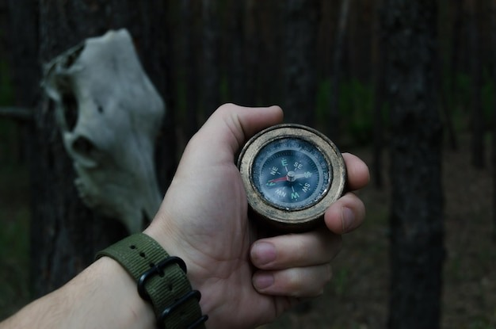

Ambos deciden explorar un camino lateral. El ambiente se vuelve más misterioso y los sonidos del bosque parecen más intensos. Valentin encuentra una vieja brújula en el suelo.
El Misterio del Bosque Encantado

Ambos deciden explorar un camino lateral. El ambiente se vuelve más misterioso y los sonidos del bosque parecen más intensos. Valentin encuentra una vieja brújula en el suelo.
